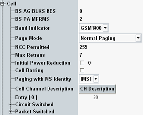

This section defines basic parameters of the GSM cell. The settings are common for circuit switched and packet switched connections.

Number of access grant channel (AGCH) data blocks reserved for the AGCH access (basic services access grant blocks reserved).
Remote command:Interval between two paging requests of the R&S CMW in multiframes (basic service paging blocks available per multiframes).
Remote command:Indication of the band GSM 1800 or GSM 1900 that the current BCCH and TCH/PDCH channels belong to. The parameter is relevant for mobiles which can operate in the GSM1800 and in the GSM 1900 bands. The information on the band is important because the two bands partially use the same channel numbers for different frequencies.
Remote command:Selects paging mode.
- Normal paging: the MS listens to its own paging group
- Paging reorganization: the MS listens to all paging groups (relevant, e.g., for spurious emission measurements according to 3GPP TS 51.010-1, section 12.
Specifies the neighbor cell by its network color code (NCC) that the MS is allowed to measure.
Remote command:Sets the limit for the retransmissions ordered via RACH.
Remote command:Specifies the MS transmit level reduction at the very beginning of the connection before the standard power control algorithm starts. The power reduction only applies for the first transmission of the access burst on the RACH as defined in 3GPP TS 45.008.
Option R&S CMW-KS210 is required.
Remote command:Allows/forbids the MS to camp (synchronize/attach) on the R&S CMW cell.
Option R&S CMW-KS210 is required.
Remote command:Selects the MS identity used by paging.
Remote command:Specifies the allowed traffic channel numbers within the simulated GSM cell.
Remote command:Displays all traffic channels selected by "Cell Channel Description".